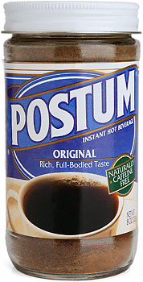

Mom agrees with Nina Planck
A recent op-ed piece in the New York Times by Nina Planck, entitled Death by Veganism caught my eye. I don’t know how long the link will be accessible, as the Times tends to move their articles over to what they call Times Select after a few days, but do read it if possible. In it Ms. Planck cites a recent court case in Atlanta in which the parents of a baby who died of malnutrition were convicted of murder. Evidently they were vegans and had fed the infant a diet of soy milk and apple juice, resulting in starvation. Planck goes on to list all the ways in which veganism is inadequate in terms of baby and toddler nutrition, and evidently even the breast milk of a vegan mother is lacking in certain essential nutrients.
We are big fans of Nina Planck on this blog although I think some of her ideas are a bit extreme (I like my meat cooked, for example). I can’t help but agree with her on this issue, though. Her article took me back to the late 70s, and my membership in the La Leche League (or the Leaky League, as one friend liked to call it). I don’t know if all chapters were like mine, or if it was the era, but my fellow members were quite extreme, and I know there were certainly some vegetarians among them. I’m not sure we had the concept of veganism then, but there were a lot of very disagreeable ideas about food and diet. I remember one woman in particular who cut circles out of liver with a cookie cutter and told her little girl that they were cookies!

Don’t get me wrong; I am a huge proponent of breast-feeding and I’m sure the La Leche League has done some great work. This just happened to be a group of militant baby boomers; in fact at age 26 I was one of the youngest in the room. I will say that nursing my babies was among the few times in my life that I have felt like I was in the right place at the right time, doing the right thing, and that’s a wonderful feeling. I didn’t buy into the concept of the family bed, however, and when the discussion would turn to the baby’s psychological need to sleep in between his parents I sat there quietly, wondering how they would ever get another baby, if they wanted one, since they all seemed like they were more in love with their babies than they were with their husbands. These are the kind of husbands who, when they were out for a walk with their families, would always be the ones carrying the baby in the Snugli , or the sort of husbands who would willingly go to see The Vagina Monologues. They seemed content to let their wives wear the Birkenstocks in the family and dictate all manner of deprivation in the bedroom and dining room. No salt at all was a big issue, I remember, and why? Sure, for the babies and toddlers, but for the whole family? I, for one, am nutty for salt and thank goodness I have low blood pressure. And heaven forbid you should even think about serving a caffeinated beverage! I think that’s the first time I ever saw or heard of Postum , and very nasty it is, too.
Comments
First, what a great idea for a blog- a mother and son-kudos for an original idea. I am with you that many of these militant vegans and vegetarians remind me of those door to door religious guys telling you that blood transfusions will send you to Hell (my mom once chased a couple off right after my brother had spine surgery and had received several units of blood!) I nursed all of my six children and I am alarmed that the pendulum is swinging back to the bottle for young mothers, but homo sapiens is an omnivore, and if we ate a variety of foods we would have a lot less obesity and eating disorders (descending my soapbox now!)
Thanks for the link, Becky. I just starting reading Planck’s Real Food a couple of nights ago, and it’s fascinating reading. I’m not ready to insist on raw milk (or meat), but her overall point of eating foods as nature — rather than some complicated industrial mechanism — made them makes a whole lot of sense. Bring on the butter!
That’s an interesting group you talk about, especially the liver cookies!
While I agree with eating naturally, I think Nina Planck really overstated her case about veganism. This response from a non-vegan was pretty good.
Hey, thanks for the link, Jeff; it certainly sounds like Barbara is preaching to the choir there, but some of her points may be valid. I’m still more on the Nina end of the continuum, though. My parents switched to raw milk awhile ago after reading her and the health benefits for my dad were immediate.
Welcome, Deborah! And you go to your mom!
Hi, Janet, yes, the more butter, the better.
You know you have to wonder where the doctor was in all of this. Typically you take your infant to the doctor for check-ups pretty frequently in the beginning. Or did the parents also not believe in doctors? I too remember the family bed discussion when I was in La Leche and I also kept quiet! Too radical for me!
I too noted Nina Plancks article and I am a huge fan of hers. I actually got to hear her speak a couple of weeks ago and she was brilliant.
Your tales of a La “Leaky” League bring a smile to my face as I am actually a leader and I am all too familiar with the zealotry of others in this group, whether about the Family Bed or some other issue. As we say, “Take what works for you and leave the rest behind.” I try to be a more moderate voice. As for the group and food, either we live in different times or just different neighborhoods but I am sometimes appalled at what the others consider healthy eating!
p.s. Glad to hear that you nursed your boys..if I may ask, for how long? Just curious if that is one reason you are so close with them..
Hi, izzy’s mama – I was pretty nervous posting this piece and figured I alienated most of our readers with it; Planck did upset quite a few bloggers with her article. Fortunately none of them seem to have read my post or I would have gotten a lot more angry comments…
As far as nursing the boys, they all nursed as long as they wanted pretty much, which was 2 years for the first, about 3 for Leland, and unfortunately I had to go back to work when Calvin was a baby so he was supplemented with bottles of pumped milk and formula but only nursed for a year, so sad, since I knew he would be my last child.
Great to hear that you nursed them all as long as was possible for you..sad about Calvin but it obviously didn’t traumatize him! Izzy is still nursing and he just turned four. He will probably be my one and only..so the day he stops will be sad..I imagine that will be soon.
Like Jeff above, I too agree with Planck about eating local and whole foods, but she has really earned my disrespect from this op-ed.
She made a lot of spurious and specious claims either by using rare, extreme cases to paint an entire population or by referring to “facts” without citing any sources.
I’m also not sure why she set her scope on vegan parents rather than parents of all kinds who are uninformed of the nutritonal choices they are giving their kids. The baby died because of ignorant parents, not because they were vegan (she also didn’t happen to mention the number of cases in the past four years where babies of omni parents died, or even all the cases where vegan babies lived. Seems kinda slanted to me). Here’s a link to a rebuttal by a doctor that does cite his sources: http://www.drmcdougall.com/misc/2007other/nytimes.html
(BTW, I’m an omni, but I don’t believe that it is the only way to eat/live and I fully respect vegetarians and vegans.)
Hi, Maria – Thanks for your comment and the link, which I just read. I’m not a doctor or a scientist so certainly can’t comment on the veracity of either his or Ms. Planck’s claims. I’m a woman of strong opinions which change frequently! His points certainly sound valid, and like my sister says, where was the doctor in the Atlanta case? And I agree, the baby died because of ignorant parents who shouldn’t have been feeding her soy milk in any case, not because they were or were not vegan.
I do enjoy articles like Planck’s that stir up a lot of controversy, though!
Add a comment